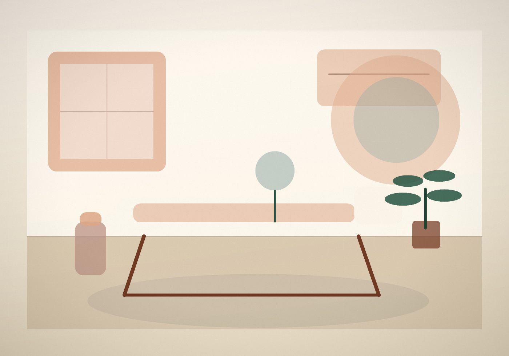

Pós-operatório
Um bloco para explicar acompanhamento e avaliação sem fazer promessa sobre recuperação ou resultado estético.
Terapias integrativas em Vitória
Conceito visual para apresentar terapias integrativas, fisioterapia e pós-operatório plástico com uma linguagem calma, técnica e fácil de confirmar pelo WhatsApp.

O visitante precisa entender o tipo de cuidado, confirmar se faz sentido para o caso dele e chegar ao WhatsApp sem perder contexto.
Serviços citados publicamente
As descrições evitam resultado prometido e devem ser revisadas pela EssenceSaúde antes de publicação oficial.
Um bloco para explicar acompanhamento e avaliação sem fazer promessa sobre recuperação ou resultado estético.
Serviços citados em agendas públicas, apresentados como ponto de conversa para o agendamento.
Espaço para massagem, acupuntura, reflexoterapia e outros cuidados listados em fontes públicas.
Contato e endereço aparecem com destaque para facilitar a confirmação de agenda e indicação.
Agendamento
A pessoa entende as linhas gerais de cuidado antes de chamar no WhatsApp.
Envia uma mensagem com contexto e informa o que procura.
A EssenceSaúde confirma avaliação, protocolo possível, agenda e endereço.
Contato público
O demo usa dados públicos de Instagram, Setmore e parceiros. Fotos, avaliações e conteúdo autoral não foram reutilizados.
Av. João Batista Parra, 633, Ed. Enseada Office, sala 1101, Praia do Suá, Vitória/ES
Instagram público citado: @essencesaude
Abrir WhatsAppAntes de enviar
Não. É um conceito visual não oficial criado com informações públicas.
Não. O demo não usa depoimentos, notas, fotos de pacientes ou conteúdo de agenda.
Não. O texto fala de acompanhamento e agendamento. Qualquer conduta precisa de avaliação profissional.